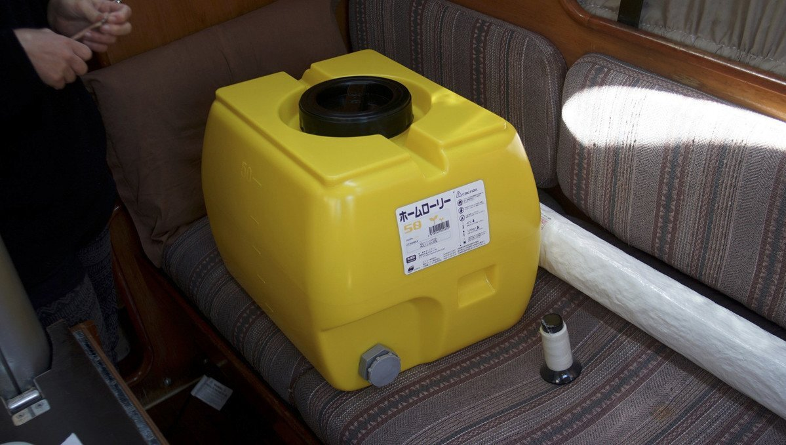

water

It's easy to forget that water is not inexhaustible when it flows so readily by the turn of the tap. Living on a boat certainly helps to develop a deeper connection to this precious resource. Depending on where you are, you'll have to treat it, catch it, carry it or pay for it.
In an emergency, the WHO recommends 10-15 liters a day per person(7.5L of which ought to be treated water), for washing, drinking, cooking, with 2.5 and 3.5 liters of that amount alloted as drinking water(per person) each day. At sea, being frugal is important, most small cruising boats do not having the carrying capacity for this amount of water. When we sailed for 52 days at sea between Japan and Canada, we left with 320 L of water, leaving us with 3 L per day per person(we didn't use all of it). We use up an average of 2.5 L per day per person, but only because we didn't do laundry, caught extra rain water underway, used a pressure sprayer to do the dishes, and because we bathed lightly. When anchored near a port, once a week, we would ferry four bins of 10 liters from shore to the boat. To conserve water, our sink faucet is operated with a manual pump, where each pump draws out approximately 60 ml of water, allowing us to measure our usage.
Carrying separate bins makes for a more resilient system. If salt gets into one tank it won't corrupt the entirety of your supplies. While traveling we met a delivery crew on a sailboat, bound for South Korea, that were forced to drink coconut water after a bad seal allowed salt water to contaminate their only water tank onboard. A sure way of preventing contamination, is to check all o-rings and tanks for leaks before leaving. We chose not to have a desalinator aboard Pino, and have managed well without it. It's a device that is expensive, high maintenance and power-hungry.

Our main water tank carries 170 L (45 US gal), our secondary has 50 L (13 US gal), while an additional 100 L (26 US gal) is stored in separate bins(4 x 1 L + 3 x 20 L).
In 2020, before the passage from Japan to Canada we replaced the holding tank with a water tank (see tank in below photo). We didn't have many options, but found a small water tank typically used in a lorry in Japan.
When it is not possible to dock at a marina, we use smaller 10 L (2.6 US gallons) bins to ferry water from shore. While it requires more trips, the lighter containers are less prone to breakage. When filling up, we filter the water.
Treating water
The best method for disinfecting water is to boil it for 1 full minute(At elevations over 2,000 meters (6,500 feet) boil water for at least 2 minutes).
If boiling is not possible, it is necessary to filter the water prior to treating it with iodine or bleach.
Filter
Find a filter that is 1 micron absolute or smaller with a NSF/ANSI 42 or NSF/ANSI 53 certification. See all certified products.

On the boat, to filter our tank water, we hook a twin set of filter housings in the line to purify the water. The 1st stage filter is pleated, and removes sediment, silt, dirt, rust, and other particles, and the 2nd stage carbon filter reduce the content of chlorine, concentration of toxic heavy metals, natural organic matter and oil products. This option is only possible when filtering from a pressured tap at a dock.
We also carry a 6-cup Brita pitcher to filter the water coming out of the faucet. We do this because the tank isn't always 100% clean(ours is damn hard to clean). A large Brita unit would be better, but we do not have the storage space for a 32-cup, and the 6-cup is short so it isn't likely to tip underway (easier to store than the taller pitcher). There aren't many good filter alternatives on the market currently for portable, low-power systems, we chose Brita because it's widely available, even if replacement filters aren't the most affordable.
In a bind, if we can't get a good filter to remove debris/impurities, we run the water through a coffee filter. When filtering rain water we like to put a funnel over a large container, and to line it with a coffee filter. The filter will eventually get saturated (especially if the water is dirty), and the flow of water will slow down, in which case it may be necessary to replace the filter. We used this technique often when filtering rain water after a passing squall while in the South Pacific Islands. We used this water primarily to wash dishes, clothes, or our bodies, not for drinking.
For more low-tech options, check out this ceramic filter, or the 3 bucket water filtration system. We have not tried either of these options and cannot vouch for their practicality on a boat.
Household bleach(Sodium hypochlorite)
Chlorine is the most commonly used disinfectant in the world for treating drinking water(WHO, 1997) owing to its effective and efficient germicidal properties, ease of application, measurement, and control, persistence, and low cost. Note that bleach works best when added to warm water.
If the water is clear and of a temperature of 20˚C (68˚F), the suggested ratio of chlorine to water is...
- With 5.25% Sodium Hypochlorite: 2 drops(0.1 mL) bleach for 1 L.
Allow the treated water to stand for 30 minutes(if adding water to a tank, do not put a cap right away, let it breathe). If there is a lingering chlorine smell and the water looks clear, it is safe to drink, if not, add another 2 drops. Let the water stand for another 15 minutes
If the water is cloudy or if the temperature is colder than 10˚C (50˚F), double the above suggested ratios of chlorine drops to water.
Mix, and let it stand for 1 to 2 hours before drinking. The longer the treated water stands the better it works to disinfect the water. If after that time there is no chlorine smell, add 4 more drops and let it stand for an additional 1-2 hours. If there is a lingering chlorine smell and the water looks clear, it is safe to drink.
Things to remember:
- Use fresh liquid bleach (less than 1 year old).
- Use NSF-approved chlorine bleach products that is suitable for disinfection and sanitization(indicated on label).
- DO NOT use non-chlorine bleach that is scented, colour-safe, or that has added cleaners.
- Bleach doesn't remove chemical pollutants or disease-causing organisms (but in an emergency, if there is no way to boil it, it is better than nothing).
- Use a dropper for more precision when adding bleach.
To measure different ratios use this calculator.
It is possible to use purification tablets, but this may not be ideal if you need to treat a lot of water. For daily use we find these expensive and impractical.
Iodine
Another option for treating water is to use liquid iodine(2%), or tablets, available in most drugstores. If using tablets, follow the directions on the package(usually 2 tablets per liter of water). Note that we have not tried this, because bleach is more readily available and because it is effective.
Liquid iodine works best with 20˚C (68˚F) water.
Treating water above 15˚C: add 5 drops(0.25 ml) of iodine to 1 L of water. Mix both together, and let it stand for 30 minutes before drinking.
Treating water between 5˚C and 15˚C: use the same ratios as warm water, but let it stand for 40 minutes before drinking.
Treating cloudy water: add 10 drops(0.5 ml) of iodine to 1 L of water and let it stand for the times listed previously for both cold and warm water.